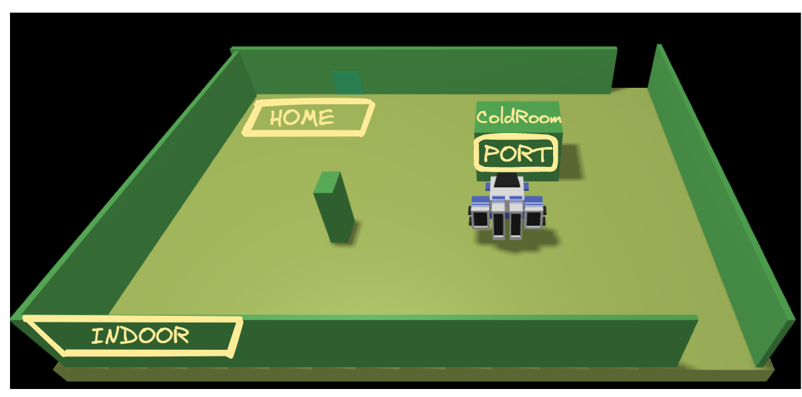
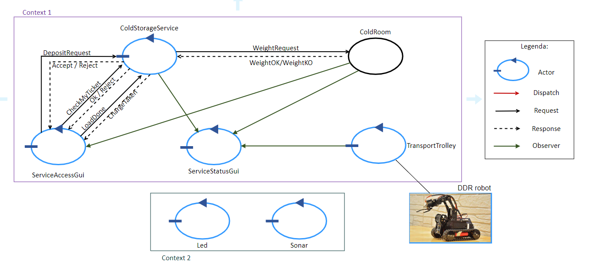

Cold Storage Service - Natali V3
Goal Sprint 0
- individuare la struttura principale e le macro-entità del sistema e le loro interazioni.
- definire un piano di lavoro.
Requisiti
A company intends to build a ColdStorageService, composed of a set of elements:
- a service area (rectangular, flat) that includes:
- an INDOOR port, to enter food (fruits, vegetables, etc. )
- a ColdRoom container, devoted to store food, up to MAXW kg.
The ColdRoom is positioned within the service area, as shown in the following picture:

-
a DDR robot working as a transport trolley, that is intially situated in its HOME location. The transport trolley has the form of a square of side length RD.
The transport trolley is used to perform a deposit action that consists in the following phases:- pick up a food-load from a Fridge truck located on the INDOOR
- go from the INDOOR to the PORT of the ColdRoom
- deposit the food-load in the ColdRoom
-
a ServiceAcessGUI that allows an human being to see the current weigth of the material stored in the ColdRoom and to send to the ColdStorageService a request to store new FW kg of food. If the request is accepted, the services return a ticket that expires after a prefixed amount of time (TICKETTIME secs) and provides a field to enter the ticket number when a Fridge truck is at the INDOOR of the service.
-
a ServiceStatusGUI that allows a Service-manager (an human being) to supervises the state of the service.
Alarm requirements
The system includes a Sonar and a Led connected to a RaspberryPi.
The Sonar is used as an ‘alarm device’: when it measures a distance less that a prefixed value DLIMT, the transport trolley must be stopped; it will be resumed when Sonar detects again a distance higher than DLIMT.
The Led is used as a warning devices, according to the following scheme:
- the Led is off when the transport trolley is at HOME
- the Led blinks while the transport trolley is moving
- the Led is on when transport trolley is stopped
Service users story
The story of the ColdStorageService can be summarized as follows:
- A Fridge truck driver uses the ServiceAcessGUI to send a request to store its load of FW kg. If the request is accepted, the driver drives its truck to the INDOOR of the service, before the ticket exipration time TICKETTIME.
- When the truck is at the INDOOR of the service, the driver uses the ServiceAcessGUI to enter the ticket number and waits until the message charge taken (sent by the ColdStorageService) appears on the ServiceAcessGUI. At this point, the truck should leave the INDOOR.
- When the service accepts a ticket, the transport trolley reaches the INDOOR, picks up the food, sends the charge taken message and then goes to the ColdRoom to store the food.
- When the deposit action is terminated, the transport trolley accepts another ticket (if any) or returns to HOME.
- While the transport trolley is moving, the Alarm requirements should be satisfied. However, the transport trolley should not be stopped if some prefixed amount of time (MINT msecs) is not passed from the previous stop.
- A Service-manager migtht use the ServiceStatusGUI to see:
- the current state of the transport trolley and it position in the room;
- the current weigth of the material stored in the ColdRoom;
- the number of store-requests rejected since the start of the service.
Analisi del TF23
Nelle discussioni con il committente, sono emerse alcune problematiche:
- Il problema del load-time lungo.
- Il problema del driver distratto (non coerente, rispetto alle due fasi: scarico preceduto da prenotazione).
- Il problema del driver malevolo.
- Il problema di garantire che una risposta venga sempre inviata sempre solo a chi ha fatto la richiesta, anche quando la richiesta è inviata da un ‘alieno’ come una pagine HTML
Il problema del load-time lungo
Il problema del load-time lungo è stato affrontato da Arnaudo/Munari con l’idea di inviare due messaggi di ‘risposta’ (una per dire al driver che il ticket inviato è valido e una per inviare chargeTaken). A questo fine hanno fatto uso diretto della connessione TCP stabilita da una versione prototipale dell’accessGui fatta come GUI JAVA.
Per consentire questa possibilità anche a livello di modellazione qak, in ActorBasicFsm è stato introdotto il metodo storeCurrentRequest() che permette di ricordare la richiesta corrente (cancellata da una replyTo). Questo però è un trucco/meccanismo che potrebbe risultare pericoloso.
Meglio affrontare il problema dal punto di vista logico, impostando una interazione a DUE-FASI tra driver e service (compito che può svolgere la serviceAcessGui).
- FASE1: il driver invia il ticket e attenda una risposta (immediata) come ad esempio
ticketaccepted/ticketrejected - FASE2: il driver invia la richiesta
loaddonee attenda la risposta (chargeTakeno fallimento per cause legate al servizio)
Il problema del driver distratto
Questo problema ha indotto il committente ad affermare che:
quando un agente esterno (driver) invia il ticket per indurre il servizio a scaricare il truck, si SUPPPONE GARANTITO che il carico del truck sia UGUALE al carico indicato nella prenotazione.
Ciò in quanto non vi sono sensori (bilance , etc) che possano fornire il valore del carico effettivo sul Truck.
Analisi preliminare dei requisiti

Service Area
val ServiceArea = object {
int LatoLungo # valore maggiore di 0
int LatoCorto # valore maggiore di 0
}
HOME
val Home = object {
int x = 0
int y = 0
}
INDOOR port
val IndoorPort = object {
int x = 0
int y = MAX_Y
}
Porta della ColdRoom
Lato sud del ColdRoom Container. Transport Trolley potrà interagire con ColdRoom attraverso questa.
ColdRoom Container
Contenitore in posizione fissa in Service Area, il cui punto di accesso è la Porta della ColdRoom, in grado di ricevere e contenere cibo da un lato specifico. Ha una capienza pari a MAXW kg.
var ColdRoom = object {
int MAXW # valore maggiore di 0
int CurrentWeight = 0
int x # valore non negativo
int y # valore non negativo
}
DDR robot
Differential Drive Robot, vedi robot.
Transport trolley
Transport trolley è un DDR robot capace di spostarsi all'interno di Service Area.
I comandi che è in grado di compiere sono descritti nell'apposita documentazione .
int RD #lunghezza del lato del quadrato
Food-load
Carico (in kg) che il robot preleverà da Indoor e depositerà in ColdRoom Container.
int FoodLoad # valore non negativo
TicketTime
long TicketTime #tempo esperesso in secondi
Ticket
int TicketNumber
ServiceAccesGUI
GUI che permette ai driver di:
- visualizzare la quantità di cibo (in peso) contenuta all'interno di ColdRoom.
- richiedere la generazione di un Ticket da presentare in un secondo momento.
- presentare il Ticket assegnatogli in precedenza nel momento in cui il driver arriva in INDOOR port.
- inviare la richiesta "LoadDone" quando il driver è pronto a scaricare.
See qak file
ColdStorageService
ColdStorageService si occupa di gestire le richieste di scarico merce, questo comprende:
- ricevere le richieste di permesso di scarico.
- generare Ticket assegnati al singolo driver che ne ha fatto richiesta.
- ricevere e verificare i Ticket nel momento in cui il driver arriva in INDOOR.
See qak file
ServiceStatusGUI
Componente che permette al Service-manager (persona fisica) di supervisionare lo Stato del servizio
Stato del Servizio
Lo stato del servizio comprende:
- Lo stato e la posizione del TransportTrolley.
- Lo stato della ColdRoom (peso corrente su totale).
- Il numero di richieste negate dall'inizio del servizio.
Messaggi
Request depositRequest : depositRequest(PESO)
Reply accept : accept(TICKET)
Reply reject : reject(NO_PARAM)
Request weightrequest : weightrequest(PESO)
Reply weightOK : weightOK( NO_PARAM )
Reply weightKO : weightKO( NO_PARAM )
Request checkmyticket : checkmyticket(TICKET)
Reply ticketchecked : ticketchecked(BOOL)
Request loaddone : loaddone(PESO)
Reply chargetaken : chargetaken(NO_PARAM)
Dispatch startToDoThings : startToDoThings( NO_PARAM )
| Name | Sender | Receiver | Type | Motivazioni |
|---|---|---|---|---|
| DepositRequest | ServiceAccesGUI | ColdStorageService | Req/Resp | Deve attendere la risposta: Accepted/Rejected |
| LoadDone | ServiceAccesGUI | ColdStorageService | Req/Resp | Deve attendere la risposta: ChargeTaken |
| WeightRequest | ColdStorageService | ColdRoom | Req/Resp | Risposta necessaria per proseguire: WeightOK/KO |
| CheckMyTicket | ServiceAccesGUI | ColdStorageService | Req/Resp | Deve attendere la risposta: Ok/Rejected |
in generale le ragioni per i vari tipi di messaggio sono:
- req/resp se ho bisogno di ricevere una risposta
- dispatch se è un messaggio per un componente specifico che conosco e non mi interessa la risposta
- event se è per uno o più componenti che non conosco direttamente (io emetto e chi è interessato riceve)
Contesti
Context ctxcoldstoragearea ip [host="localhost" port=8040]
Context ctxLedSonar ip [host="127.0.0.1" port=8088]
Keypoints
1) Aggiornamento di ServiceStatusGUI
SSG dovrà presentare i dati aggiornati del sistema ad ogni istante, dovrà quindi comportarsi come un Observer, sfruttiamo la tecnologia degli StreamQActor.
2) Carico di lavoro di ColdStorageService
Tutto il lavoro del sistema al momento passa attraverso ColdStorageService, dalla gestione dei Ticket all'interazione con il TransportTrolley --> Da valutare una divisione in più componenti
3) ColdRoom, Attore o POJO?
Per requisiti il sistema deve essere distribuito, tutte le entità definite finora saranno quindi modellate come Attori, in particolare ColdRoom decidiamo di modellarla come attore e non come POJO per i seguenti motivi:
- Nonostante non sia nei requisiti è logico pensare che in futuro il sistema debba essere esteso con funzionalità per diminuire il peso contenuto in ColdRoom. Definire il componente come attore faciliterà questa aggiunta.
- Inoltre definire ColdRoom come attore esterno è in linea con il principio di singola responsabilità e alleggerisce il carico di lavoro di ColdStorageService.
See qak file
Posizione del robot?
Sarà necessario per il sistema riuscire ad identificare la posizione corrente del robot in ogni istante per pianificare il percorso da intraprendere.
Per risolvere il problema assoceremo alla Service Area un sistema di coordinate da definire in seguito.
Discussioni col committente
Richiesta al committente:
Dimensione della Service Area: 7m * 5m.
Richiesta al committente:
- Capienza massima (MAXW) corrisponde a 50 kg
- La grandezza di ColdRoom Container è 1m * 1m
- Posizione in Service Area come da figura iniziale
- Sarà possibile per il robot muoversi attorno alla ColdRoom
Richiesta al committente:
- dimensione del transport trolley corrisponde ad un quadrato di lunghezza RD = 1 m.
Test Plan
Durante la face di testing dovranno essere verificati i seguenti casi:
- Inserendo un ticket valido il peso in ColdRoom deve aggiornarsi correttamente.
- Un ticket deve essere rifiutato per timeout (il peso non deve cambiare)
- Una richiesta di peso eccessiva deve essere rifiutata
Codice terzo test: TestService
Progettazione
Codice sprint0: coldstorage0.qak
Divisione in Sprint
-
Transport Trolley + ColdStorageService Sprint 1.0 - V3
Descrizione
Lo scopo del primo sprint è produrre una prima versione funzionante del core dell'applicazione. Questo comprende ColdStorageService con la logica di gestione dei Ticket e il TransportTrolley funzionante.
A questa parte deve essere affiancata una mock version della ServiceAccessGUI per la fase di testing. -
Led e Sonar Sprint 2
Descrizione
Nel secondo sprint verranno implementati il sistema di led e sonar con la logica ad essi associata.
-
ServiceStatusGui e grafiche migliorate Sprint 3
Descrizione
Nel terzo sprint ci occuperemo della ServiceStatusGUI e delle interfacce grafiche finali.
Divisione dei compiti
Ogni Sprint verrà affrontato insieme con divisione dei compiti specifica valutata di volta in volta.
Piano di Lavoro
| Sprint | GOAL | Tempo Stimato | Divisione del Lavoro | Note |
|---|---|---|---|---|
| SPRINT 1 | Sviluppo del primo prototipo | 2 man-days | 3 persone | |
| Sviluppo della ServiceAccessGUI | 1 man-day | 2 persone | ||
| Testing | 2 man-hours | 1 persona | ||
| SPRINT 2 | Sviluppo di Led e Sonar | 4 man-hours | 3 persone | |
| Testing di Led e sonar | 1 man-hour | 1 persona | ||
| Implementazione con il resto del sistema | 1 man-hour | 1 persona | ||
| Testing completo | 1 man-hour | 1 persona | ||
| SPRINT 3 | Sviluppo della ServiceStatusGui | 1 man-day | 2 persone | |
| Testing del sistema completo | 2 man-hour | 1 persona | ||
| Refactoring della user interface | 1 man-hour | 1 persona | ||
| Testing finale dell'intera applicazione | 3 man-hour | 3 persone | Il testing finale deve essere condiviso da tutti i membri del gruppo |
| Lisa Innocenti Uccini | Luca Lombardi | Giacomo Romanini |
|---|---|---|
| github: LisaIU00 | github: Lombax99 | github: RedDuality |